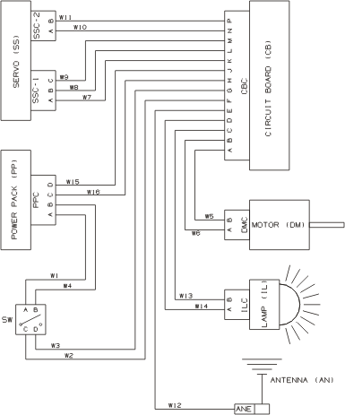
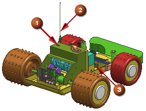
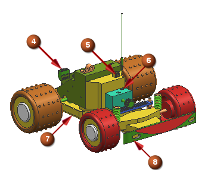

Review the electrical circuit and the schematic diagram. The device names are included.

The illustrations below identify device connections on the toy car.
1. Drive Motor connector
2. Antenna
3. Head Light connector

4. Circuit Board connector
5. Power Pack connector
6. Servo Unit 2 & 3 pin connectors
7. Switch location
8. Headlight Spoiler
